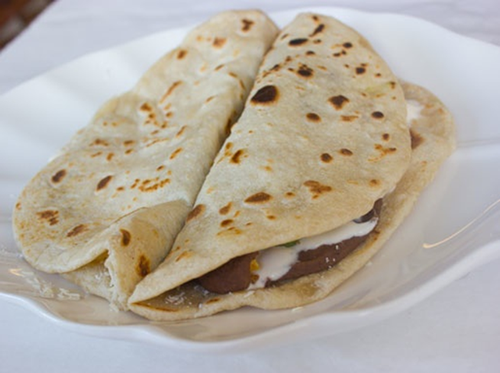
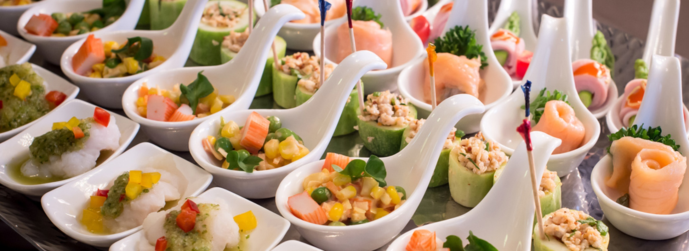

GASTRONOMIA
7 razones para estudiar Gastronomía

La gastronomía hondureña es muy variada, ya que contiene elementos pre-colombinos, españoles, criollos y, en alguna medida, africanos, como es típico en toda la costa atlántica Centro-americana. La cocina tradicional hondureña está dominada fuertemente por los mariscos y por el maíz, que es un cultivo autóctono que forma parte de la base alimentaria de los pueblos pre-hispánicos de Mesoamérica que habitaron la región. La comida típica de Honduras está basada en carnes, aves y pescados, tortillas, frijoles, arroz.
Gastronomía de Honduras
La alta cocina francesa llega al cine en forma de comedia

Gastronomia
Gastronomia y Cocina
Escuela de Gastronomía

Postres Irresistibles

Sabor Cubano